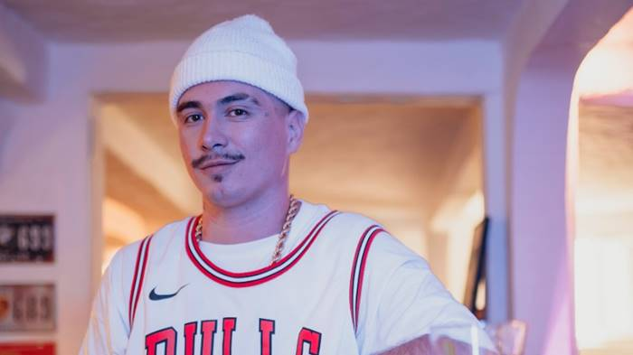
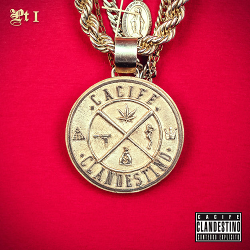

Felp 22
História
Felipe Laurindo de Carvalho, conhecido como Felp22, é um rapper, cantor, compositor e empresário brasileiro, famoso por sua participação no grupo de rap Cacife Clandestino. Nascido em Santa Catarina, mudou-se para o Rio de Janeiro na infância e começou a rimar aos 12 anos, influenciado por diversos estilos musicais. Fundou o Cacife Clandestino em 2011, lançando sucessos como "Ladra de Salto" e "Beija-Flor". Ao longo de sua carreira, acumulou milhões de visualizações e streams com álbuns como "Conteúdo Explícito Part 1" e "Ouro Latino". Além disso, expandiu sua atuação para o cenário internacional, participando de projetos como o Trapperz, gravando com artistas do Trap Latino. Como empresário, é co-fundador da Medellin Records e da marca de roupas Marginal Supply. A Medellin Records assinou contrato com a Sony Music Brasil em 2019. Sua carreira internacional também inclui participação em um camp de composição e produção com renomados artistas do trap.
Lançamentos
Último álbum lançado foi "Joias do Barro". A produção busca retratar a antiga realidade do artista através da fé, amor e motivação para sair da lama, como os verdadeiros diamantes que hoje enfeitam suas joias. Com palavras do próprio Felp: 'Joias do Barro’ significa a prosperidade do lugar em que nascemos, seguindo a ideia de que somos valiosos, só precisamos nos lapidar e buscar nosso próprio brilho. É sobre prosperidade, representatividade, gratidão pelas vitórias conquistadas e se reerguer e continuar lutando até que seu dia chegue” De mais sucesso o "Conteúdo Explícito" do Cacife Clandestino é uma série de álbuns que apresenta letras diretas e explícitas, abordando temas como a vida nas ruas, desafios enfrentados na sociedade, experiências pessoais e reflexões sobre a realidade. Com uma linguagem franca e sem rodeios, o grupo transmite suas mensagens de forma crua e autêntica, utilizando o rap como meio de expressão. Os álbuns da série, como "Conteúdo Explícito Part 1" e "Conteúdo Explícito Part 2", destacam-se por suas batidas envolventes e letras impactantes, que refletem as vivências e perspectivas dos integrantes do Cacife Clandestino.
Sobre o Grupo Cacife Clandestino
O Grupo Cacife Clandestino surgiu a partir da Roda Cultural Amalgama em Botafogo-RJ, composto por Felp22, Bruno Cyon e TerrorDosBeats, figuras proeminentes no movimento de rua da Zona Sul do Rio de Janeiro. Apesar de ser uma formação recente, o grupo conquistou um amplo reconhecimento no cenário carioca e agora é conhecido nacionalmente. Felp22, natural da Guarda do Embaú, Santa Catarina, começou a rimar aos 12 anos, influenciado pelo samba e reggae locais, além de artistas nacionais e internacionais do rap. Por sua vez, Terror dos Beats, também carioca, iniciou sua carreira como rapper aos 17 anos e depois se dedicou à produção de beats, inspirado por diversos artistas do cenário hip-hop. Juntos, Felp22 e Terror dos Beats formaram o Cacife Clandestino, apostando no potencial um do outro e combinando flow, batidas e melodia para criar um estilo único e promissor no cenário musical brasileiro.